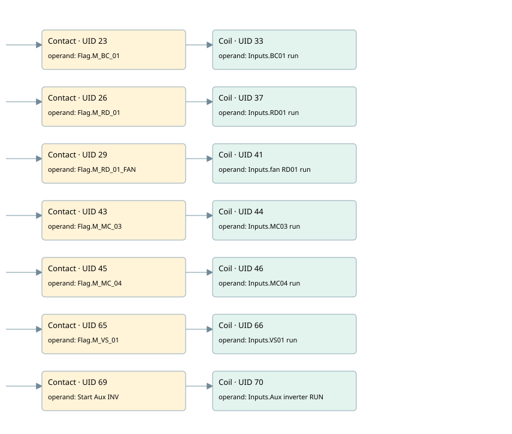

motors simulated
simulation · 검색 색인 순서 4 · 원본 내부 NID 추정 1
백업 PLF 원본의 2992518 바이트 위치에서 복원한 XML. 검색 문서 1082의 객체 키 161022006b28000000000000와 연결했다. 이름 해석 14/14개. 남은 RefId는 상수 또는 미해석 참조다.
연결 구조 다시 그리기
원본 Part/PCon/Wire를 이용한 연결도다. TIA 화면의 래더 배치 또는 실행 결과를 재현한 그림은 아니다. 핀 연결은 아래 표와 원본 XML을 기준으로 읽는다. 노드 위에 마우스를 두면 피연산자 이름을 볼 수 있다.

접점·코일·블록과 피연산자
| Part UID | Gate | Negated 핀 | 연결 피연산자 |
|---|---|---|---|
| 23 | Contact | operand = Flag.M_BC_01 | |
| 33 | Coil | operand = Inputs.BC01 run | |
| 26 | Contact | operand = Flag.M_RD_01 | |
| 37 | Coil | operand = Inputs.RD01 run | |
| 29 | Contact | operand = Flag.M_RD_01_FAN | |
| 41 | Coil | operand = Inputs.fan RD01 run | |
| 43 | Contact | operand = Flag.M_MC_03 | |
| 44 | Coil | operand = Inputs.MC03 run | |
| 45 | Contact | operand = Flag.M_MC_04 | |
| 46 | Coil | operand = Inputs.MC04 run | |
| 65 | Contact | operand = Flag.M_VS_01 | |
| 66 | Coil | operand = Inputs.VS01 run | |
| 69 | Contact | operand = Start Aux INV | |
| 70 | Coil | operand = Inputs.Aux inverter RUN |
접점 경로를 펼친 조건식
Contact·O/A·비교기의 원본 연결을 읽기 쉽게 펼친 보조 해석이다. POWER는 전원 레일 시작을 뜻한다. 호출 블록·에지·타이머의 내부 동작과 다중 쓰기 순서는 이 표로 실행 검증하지 않았다. 미해석 핀과 RefId는 원문 연결표에서 확인한다.
| UID | 동작 | 대상 | 원본 접점 경로 | 내용 |
|---|---|---|---|---|
| 33 | Coil | Inputs.BC01 run | Flag.M_BC_01 | 조건에 따른 Coil 기록 |
| 37 | Coil | Inputs.RD01 run | Flag.M_RD_01 | 조건에 따른 Coil 기록 |
| 41 | Coil | Inputs.fan RD01 run | Flag.M_RD_01_FAN | 조건에 따른 Coil 기록 |
| 44 | Coil | Inputs.MC03 run | Flag.M_MC_03 | 조건에 따른 Coil 기록 |
| 46 | Coil | Inputs.MC04 run | Flag.M_MC_04 | 조건에 따른 Coil 기록 |
| 66 | Coil | Inputs.VS01 run | Flag.M_VS_01 | 조건에 따른 Coil 기록 |
| 70 | Coil | Inputs.Aux inverter RUN | Start Aux INV | 조건에 따른 Coil 기록 |
원본 배선 연결
| Wire UID | 동일 Wire 연결 끝점 |
|---|---|
| 21 | Powerrail {} ↔ Part 23.in ↔ Part 26.in ↔ Part 29.in ↔ Part 43.in ↔ Part 45.in ↔ Part 65.in ↔ Part 69.in |
| 22 | ORef 24 (Flag.M_BC_01) ↔ Part 23.operand |
| 35 | Part 23.out ↔ Part 33.in |
| 32 | ORef 34 (Inputs.BC01 run) ↔ Part 33.operand |
| 25 | ORef 27 (Flag.M_RD_01) ↔ Part 26.operand |
| 55 | Part 26.out ↔ Part 37.in |
| 36 | ORef 38 (Inputs.RD01 run) ↔ Part 37.operand |
| 28 | ORef 30 (Flag.M_RD_01_FAN) ↔ Part 29.operand |
| 39 | Part 29.out ↔ Part 41.in |
| 40 | ORef 42 (Inputs.fan RD01 run) ↔ Part 41.operand |
| 56 | ORef 49 (Flag.M_MC_03) ↔ Part 43.operand |
| 57 | Part 43.out ↔ Part 44.in |
| 58 | ORef 50 (Inputs.MC03 run) ↔ Part 44.operand |
| 59 | ORef 51 (Flag.M_MC_04) ↔ Part 45.operand |
| 60 | Part 45.out ↔ Part 46.in |
| 61 | ORef 52 (Inputs.MC04 run) ↔ Part 46.operand |
| 90 | ORef 77 (Flag.M_VS_01) ↔ Part 65.operand |
| 91 | Part 65.out ↔ Part 66.in |
| 92 | ORef 78 (Inputs.VS01 run) ↔ Part 66.operand |
| 96 | ORef 81 (Start Aux INV) ↔ Part 69.operand |
| 97 | Part 69.out ↔ Part 70.in |
| 98 | ORef 82 (Inputs.Aux inverter RUN) ↔ Part 70.operand |
식별자 해석 근거 14개
| ORef UID | RefId | 이름 | IdentXmlPart 파일 | 해석 방법 |
|---|---|---|---|---|
| 24 | 2 | Flag.M_BC_01 | 0635-IdentXmlPart.xml | UID/RID + search-text + NID agreement |
| 34 | 6 | Inputs.BC01 run | 0635-IdentXmlPart.xml | UID/RID + search-text + NID agreement |
| 27 | 9 | Flag.M_RD_01 | 0635-IdentXmlPart.xml | UID/RID + search-text + NID agreement |
| 38 | 8 | Inputs.RD01 run | 0635-IdentXmlPart.xml | UID/RID + search-text + NID agreement |
| 30 | 10 | Flag.M_RD_01_FAN | 0635-IdentXmlPart.xml | UID/RID + search-text + NID agreement |
| 42 | 206 | Inputs.fan RD01 run | 0635-IdentXmlPart.xml | UID/RID + search-text + NID agreement |
| 49 | 15 | Flag.M_MC_03 | 0635-IdentXmlPart.xml | UID/RID + search-text + NID agreement |
| 50 | 14 | Inputs.MC03 run | 0635-IdentXmlPart.xml | UID/RID + search-text + NID agreement |
| 51 | 18 | Flag.M_MC_04 | 0635-IdentXmlPart.xml | UID/RID + search-text + NID agreement |
| 52 | 17 | Inputs.MC04 run | 0635-IdentXmlPart.xml | UID/RID + search-text + NID agreement |
| 77 | 24 | Flag.M_VS_01 | 0635-IdentXmlPart.xml | UID/RID + search-text + NID agreement |
| 78 | 23 | Inputs.VS01 run | 0635-IdentXmlPart.xml | UID/RID + search-text + NID agreement |
| 81 | 35 | Start Aux INV | 0636-IdentXmlPart.xml | UID/RID + search-text + NID agreement |
| 82 | 29 | Inputs.Aux inverter RUN | 0635-IdentXmlPart.xml | UID/RID + search-text + NID agreement |
검색 코드 보조 자료
참조 명칭을 찾기 위한 자료이며 실행 순서나 AND/OR 관계는 위 연결표로 확인한다.
"flag".m_bc_01 "inputs"."bc01 run" "flag".m_rd_01 "inputs"."rd01 run" "flag".m_rd_01_fan "inputs"."fan rd01 run" "flag".m_mc_03 "inputs"."mc03 run" "flag".m_mc_04 "inputs"."mc04 run" "flag".m_vs_01 "inputs"."vs01 run" "start aux inv" "inputs"."aux inverter run"